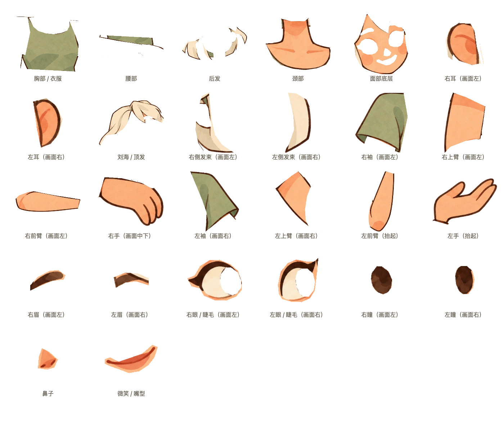
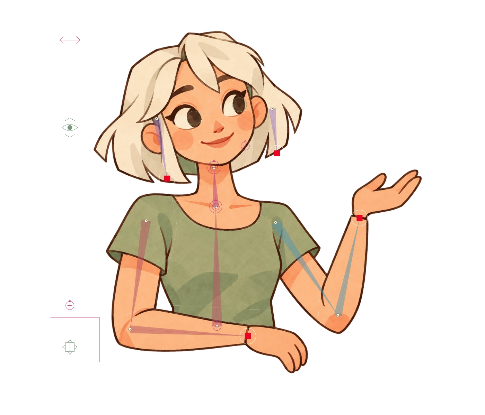
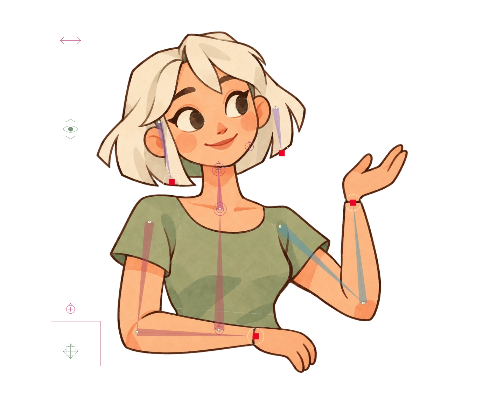

同一个角色，从原图出发
已确认角色由 26 张独立透明图层在原坐标精确拼接
从已确认角色、26 张透明图层与真实控制器运行时导出。不是新生成的替代角色。
已确认角色由 26 张独立透明图层在原坐标精确拼接

角色的头发、五官、身体和双臂等 26 张真实透明图层分开展示

同一个角色显示参考风格的彩色骨骼与 12 个姿态控制器

左手目标改变后，上臂与前臂通过 IK 联动的角色姿态
同一个角色的头部、表情、视线和发梢控制细节
保持同一角色造型的轻微侧身抬手姿态，展现绑定后的表达能力